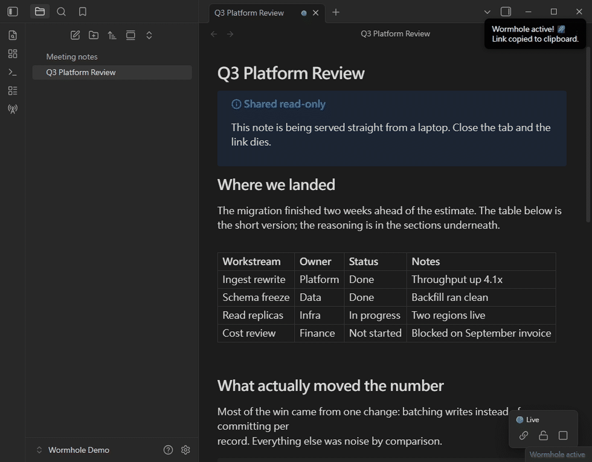
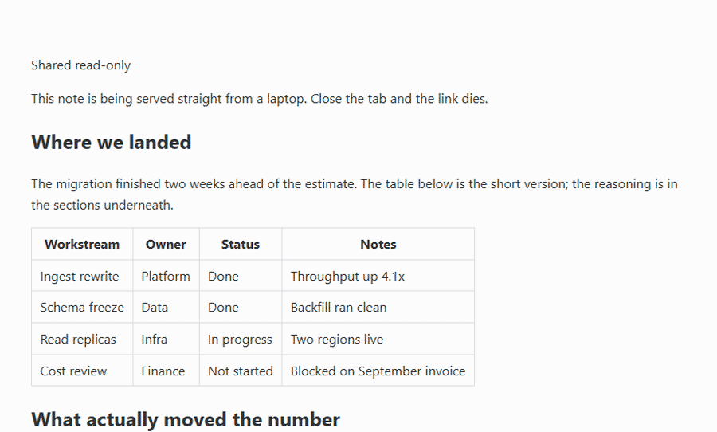

Share a note through a temporary wormhole
Instantly share your notes via a secure, temporary, local wormhole. No cloud upload. Note Wormhole turns your machine into a temporary web server for a single note and exposes it through a Cloudflare quick tunnel. Close the tab, disable the plugin, or quit the app, and the link is dead.

Features
Ephemeral sharing
A public https://<random>.trycloudflare.com URL tunnels straight to your computer.
No cloud upload
The note is rendered into memory and served from there. Nothing is written to a temp file, and nothing is stored on a third-party server.
Bound to the tab
Closing the note's tab, unloading the plugin, or quitting immediately tears down the tunnel and the local server.
Anti-copy mode
Optionally disable text selection, the context menu, and copy/print shortcuts for visitors.
Live viewer count
See how many people currently have the page open.
Reader theme
The Theme mode setting decides whether visitors get light, dark, or whatever their own system prefers.
How it works
- The note is re-rendered into a standalone page and held in memory only.
- A local HTTP server binds to 127.0.0.1 on an OS-assigned port; it is only reachable through the tunnel.
- Your own
cloudflaredruns as a child process and opens a Cloudflare quick tunnel: no Cloudflare account or token is needed, and the URL is randomly assigned. - Ending a session destroys the tunnel and force-closes every open socket, so the URL dies immediately.
Usage
Opening a wormhole
- Open the note you want to share.
- Click the radio tower icon in the ribbon, or run the Start wormhole for current note command. The ribbon icon opens a picker, so you can share any open tab.
- On first use, confirm what sharing exposes. You need cloudflared installed.
- The link is copied to your clipboard, and a green dot appears in the tab header.
Controlling a session
- Hover the green dot to see the viewer count.
- Click the green dot (or press Enter when it has focus) for the menu: Copy link, Prevent / Unlock selection, Stop sharing.
- The floating panel in the bottom-right of the note offers the same controls.
- The status bar item shows how many wormholes are open; click it to toggle the current note.
- Or run Stop current wormhole from the command palette.


Installation
From Community Plugins
Open Settings → Community plugins, search for “Note Wormhole”, then install and enable it.
Manual
Download main.js, manifest.json and styles.css from the latest release, copy them into <your vault>/.obsidian/plugins/note-wormhole/, reload Obsidian and enable the plugin.
Requires cloudflared
The tunnel is opened by Cloudflare's cloudflared. You install it; the plugin never downloads or installs it for you. The settings tab tells you whether it was found and gives the install command for your platform. Detection runs again on every share, so no restart is needed after installing.
| Platform | Install with |
|---|---|
| Windows | winget install Cloudflare.cloudflared |
| macOS | brew install cloudflared |
| Linux | Cloudflare's package repository, or the .deb/.rpm from releases |
Requirements
- Desktop only — the plugin runs a local Node.js HTTP server and a child process, which Obsidian mobile does not support.
- Obsidian 1.5.1 or newer.
- cloudflared installed on your machine.
- An internet connection to establish the tunnel.
Privacy & security
- No telemetry, no account, and no server of ours anywhere in the path. The only traffic is the tunnel relayed through Cloudflare's edge network while a wormhole is open.
- The server answers
/(the note) and/_heartbeat(viewer counting). Everything else returns 404. - Responses are sent with
no-store, a restrictiveContent-Security-Policy,X-Robots-Tag: noindexandReferrer-Policy: no-referrer. - Outside your vault it only looks for cloudflared (on PATH and standard install locations) and runs cloudflared --version to confirm it. It writes nothing outside the vault.
- The quick tunnel is subject to Cloudflare's terms.
Anyone with the URL can read the note while the session is open. There is no password or access list.
Anti-copy mode is a deterrent, not protection. Anyone who wants the text can still read the page source.